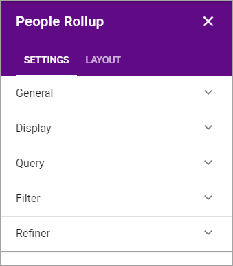
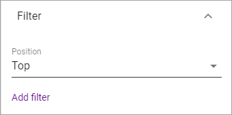
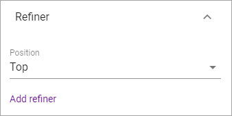

People Rollup¶
(This documentation is just started, more will be added/edited soon.)
You can use this block on any page, even in a team site. Use it to display information for one or a number of colleagues. The block can be used for a vast number of applications but some examples are:
- Display contact person for a page or for something else.
- List colleagues working at a particular office.
- List members or owners in a group site.
- Create a people directory.
Here are two examples:
)
)
Settings for the control¶
The following settings are available:


Query¶
Here you can set the following:

- Query Type: Select type of information to use for the Query (=detailed settings of what to display). You can use fields from user profiles, Sharepoint groups or fields defined in the properties for this site. The latter has to be set up in Omnia Admin by an administrator, using Properties for Content Management. For example: To display a contact person you would most likely use “User Fields On Page”, to display colleagues working at a particular office - “Profile Query”, and to display members in a group site - “Sharepoint Groups”.
- Select settings for the query, and click “Add filter”.
Here’s an example of a query for displaying colleauges at the Stockholm office. You can see the actual query in the field below, which was added when clicking “Add filter”.

Note for advanced users: You can use all search related options here in the Query field.
If you selected “Sharepoint groups” as Query Type, select a group from the list and click “Add group”. If available, you can add more than one group this way.

Note! You must select the field even if there should be only one field available.
If you selected “User fields On Page” as Query Type, select a field from the list and click “Add field”. If available, you can select any number of fields this way.

Note! You must select the field even if there should be only one field available.
Filter¶
Use these settings to add filters for the users to use.
- Position: Decide where to place the filters; top, left or right.
- Add filter: Click this button to add a filter.
Refiner¶
Use these settings to add refiners.
- Position: Decide where to out the refiners; top, left or right.
- Add refiner: Click this button to add a refiner.